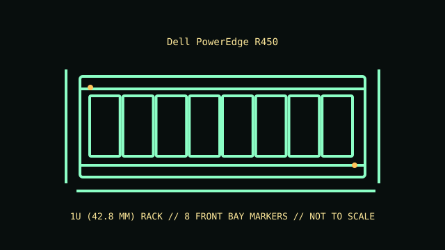

[ MODEL IDENTIFICATION // POWEREDGE R450 // 15TH-GENERATION 1U SERVER ]
Dell PowerEdge R450
1U (42.8 mm); 42.8 × 482 × 662.2 mm for the 8 × 2.5-inch configuration; 4 × 3.5-inch configurations extend to about 713 mm deep. Dimensions exclude rail/cable-arm projection.

REVISION CAVEAT: Use the chassis service tag to distinguish bay/backplane, PSU and riser options; published maximums describe alternatives, not one simultaneous configuration.
Specifications & fit
| Catalog subcategory | Rack server enclosures |
|---|---|
| Model / board and backplane | Dell PowerEdge R450 proprietary dual-socket system board; front hot-plug SAS/SATA backplane, with storage protocol/controller options determined by chassis and controller SKU. |
| Rack height / dimensions / rails | 1U (42.8 mm); 42.8 × 482 × 662.2 mm for the 8 × 2.5-inch configuration; 4 × 3.5-inch configurations extend to about 713 mm deep. Dimensions exclude rail/cable-arm projection. ReadyRails sliding rail options fit compatible four-post racks; optional cable-management arm adds rear clearance. Verify rack post type, depth and rail-kit part number before installation. |
| Power supply | One or two hot-plug redundant power supplies, with AC and DC wattage options depending on build (commonly 800 W or 1100 W AC). Match PSU type and wattage to input, CPU and accelerator configuration. |
| Drive bays | Front choices include up to 8 × 2.5-inch or 4 × 3.5-inch hot-plug SAS/SATA bays. Backplane and controller determine supported drives; NVMe availability is option-specific. |
| Expansion / risers | Up to two PCIe Gen4 expansion slots through the selected riser; card height, width and length are riser-specific. |
| Cooling | Hot-plug fan modules; standard or higher-performance fan selections vary with CPU, storage and ambient-temperature configuration. Maintain the installed matched fan set and front-to-rear airflow. |
| Compatibility | R450-specific system board, air shroud, risers, backplanes, drive carriers and PSU family; do not substitute R550/R650 parts based on 1U appearance. SAS/SATA/NVMe support is determined by the installed backplane and storage controller. |
| Revision identification | Use the chassis service tag to distinguish bay/backplane, PSU and riser options; published maximums describe alternatives, not one simultaneous configuration. |
Compatibility & preservation notes
R450-specific system board, air shroud, risers, backplanes, drive carriers and PSU family; do not substitute R550/R650 parts based on 1U appearance. SAS/SATA/NVMe support is determined by the installed backplane and storage controller.
ReadyRails sliding rail options fit compatible four-post racks; optional cable-management arm adds rear clearance. Verify rack post type, depth and rail-kit part number before installation. Always use the correct lifting procedure for the complete installed unit and disconnect power before service.
- Record the full model/product number, serial label, board and backplane identifiers, installed risers, PSU labels and rail-kit part number before disassembly.
- For rack servers, verify exact generation, bay/backplane, controller, riser, fan and PSU compatibility; equal rack height does not establish parts compatibility.
- Keep drive carriers, blanks, shrouds, brackets and fasteners labeled with their original chassis and position. Measure the complete chassis, rails and cable arm before rack installation.
Manufacturer manuals & product specifications
- Dell PowerEdge R450 specificationsManufacturer documentation for this exact model family; verify the machine/product number and document revision.
- Dell EMC PowerEdge R450 Technical GuideManufacturer documentation for this exact model family; verify the machine/product number and document revision.
Published dimensions and option maxima vary by build. Check the specific product number and measure the specimen before restoration, shipping or installation.